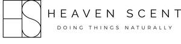

Trade Mark Journal No.2025/018 2 May 2025
UK00004161258 17 February 2025 (3,4,5,21,28)

- Class 3
- Incense; Fragrance emitting wicks for room fragrance; Incense sticks; Scented wax melts; Incense spray; Incense sachets; Incense cones; Soap; Deodorant soap; Soap (Deodorant -); Shower soap; Perfumed soap; Bath soap; Handmade soap; Scented soaps; Cakes of soap; Soap (Cakes of -); Shaving soap; Almond soap; Detergent soap; Toilet soap; Cakes of toilet soap; Aloe soap; Hand soap; Antiperspirant soap; Soap (Antiperspirant -); Liquid bath soap; Liquid soap; Soap powder; Soaps; Loofah soaps; Bar soap; Soap powders; Dish soaps; Sugar soap; Skin soap; Soap sheets; Beauty soap; Carbolic soaps; Soap products; Bath soaps; Cakes of soap for body washing; Laundry soap; Creams (Soap -) for use in washing; Perfumed soaps; Cream soaps; Body cream soap; Toilet soaps; Liquid soap for dish washing; Almond soaps; Shaving soaps; Liquid bath soaps; Bars of soap; Liquid soap used in foot bath; Liquid soap for laundry; Waterless soap; Granulated soap; Body soap; Cosmetic soap; Soap pads; Saddle soap; Soap for brightening textile; Liquid soaps; Aloe soaps; Industrial soap; Liquid soaps for laundry; Hand soaps; Soap solutions; Liquid soap used in foot baths; Laundry soaps; Non-medicated toilet soaps; Scented water for fragrancing; Fragrance sachets; Fragrance refills for non-electric room fragrance dispensers; Perfume; Perfume oils; Oils for perfumes and scents; Scented oils; Scented sachets; Perfume water; Potpourris [fragrances]; Fragrance sachets for eye pillows; Fragrances; Perfumery and fragrances; Scented linen sprays; Scented body lotions; Scents; Room perfume sprays; Scented water; Amber [perfume]; Air fragrance reed diffusers; Scented room sprays; Peppermint oil [perfumery]; Scented body lotions and creams; Perfumes; Scented wood; Scented linen water; Aromatherapy lotions; Fragrance preparations; Scented body creams; Perfumed sachets; Perfumed potpourris; Perfumed lotions [toilet preparations]; Scented fabric refresher sprays; Scented body spray; Air fragrance preparations; Scented bathing salts; Bath lotion; Lip balm; Lip balms; Lip balm [non-medicated]; Lip balms [non-medicated]; Non-medicated lip balms; Lip cream; Lip gloss; Lip glosses; Lip makeup; Lip cosmetics; Lip pomades; Shaving balm; Hair balm; Lip liner; Lip gloss palettes; Lip tints; Beard balm; Shave balm; Cleansing balm; Lip conditioners; Blemish balm creams; Lip liners; Aftershave balm; Lip pencils; Lip neutralizers; Lip protectors [cosmetic]; Lip rouge; Beauty balm creams; Lip polisher; Non-medicated balm for hair; Lip stains [cosmetics]; Lip protectors (Non-medicated -); Shaving balms; Lip coatings (Non-medicated -); Baby bottom balm; After-shave balms; Skin balms [cosmetic]; Hair balms; Lip coatings [cosmetic]; Skin balms (Non-medicated -); Non-medicated skin balms; Aftershave balms; Lip care preparations; Non-medicated lip care preparations; Balms (Non-medicated -); Lip stains for cosmetic purposes; Foot balms (Non-medicated -); Moisturising body lotion [cosmetic]; Skin cleansing cream [non-medicated]; Aftershave moisturising cream; Moisturising skin lotions [cosmetic]; Moisturising skin creams [cosmetic]; Cuticle cream; Lipstick; Skin cleansing cream; Skin cleansing lotion; Cosmetic nourishing creams; Mattifying gel cream; Skin relief serum [cosmetic]; Moisturizing creams; Nail cream; Skin lotion; Skin cream [for cosmetic use]; Moisturizing body lotions; Moisturising gels [cosmetic]; Moisturising creams; Skin moisturizer; Skin moisturizer masks; Facial lotion; Sun protectors for lips; Eyebrow gel; Cleansing cream; Skin cream; Refill packs for skin care cream dispensers; Moisturising creams, lotions and gels; Eyebrow mascara; Hydrating creams for cosmetic use; Shaving lotion; Skin recovery creams [cosmetics]; Moist wipes impregnated with a cosmetic lotion; Cleansing creams [cosmetic]; Facial concealer; Face cream (Non-medicated -); Cosmetic creams for dry skin; Skin moisturiser; Moisturizing preparations for the skin; Facial cream [for cosmetic use]; Cosmetic pencils for cheeks; Skin care creams [cosmetic]; Cosmetic creams for skin care; Non-medicated scalp treatment cream; Hand lotion (Non-medicated -); Skin moisturizers used as cosmetics; Eye wrinkle lotions; Skin creams [for cosmetic use]; Cosmetic creams for the skin; Milky lotions for skin care; Skin creams [cosmetic]; Skin care lotions [cosmetic]; Body mask lotion; Skin creams [non-medicated]; Non-medicated skin creams; After-sun lotions [for cosmetic use]; Skin moisturizers; Hair lotion; Non-medicated cleansing creams; Cream for whitening the skin; Whitening the skin (Cream for -); Non-medicated skin lotions; Body mask cream; Facial moisturisers [cosmetic]; Body and facial creams [cosmetics]; Facial butters; Gel scrub; Non-medicated skin serums; Face creams; Face and body creams; Face and body masks; Make-up for the face and body; Face masks; Face powder; Face wash; Face gels; Face blusher; Face and body glitter; Face powders; Face and body lotions; Face scrub; Face powder (Non-medicated -); Face oils; Face glitter; Face wipes; Skin calming serum; Anti-ageing serum; Hair care serum; Face wash [cosmetic]; Make-up preparations for the face and body; Toning lotion, for the face, body and hands; Face scrubs (Non-medicated -); Creamy face powder; Lotions for face and body care; Face powder [for cosmetic use]; Facial serum for cosmetic use; Exfoliating scrubs for the face; Liquid soaps for hands and face; Eye correction serum; Face creams for cosmetic use; Anti-aging serum for cosmetic use; Cosmetic creams for firming skin around eyes; Hair care serums; Gel eye masks; Cosmetics for use in the treatment of wrinkled skin; Facial wash; Facial masks; Clay skin masks; Skin moisturisers; Facial makeup; Body and facial gels [cosmetics]; Beauty serums; Facial cream; Eyes make-up; Face lifting stickers for cosmetic use; Facial creams; Hair and body wash; Foot masks for skin care; Hair moisturisers; Pores tightening mask packs used as cosmetics; Facial cleansing milk; Facial washes; Skin creams; Shampoo bars; Shampoo; Hair conditioner bars; Hair shampoo; Baby shampoo mousse; Shampoos; Dandruff shampoo; Waterless shampoo; Carpet shampoo; Hair shampoos; Baby shampoo; Car shampoos; Dry shampoos; Refill packs for shampoo dispensers; Non-medicated hair shampoos; Shampoo for animals; Waterless shampoos; Body shampoos; Emollient shampoos; Pet shampoos; Bath and shower gels; Shower gels; Shower and bath gel; Bath and shower gel; Hair gels; Shower gel; Vehicle shampoos; Hair lotions; Non-medicated shampoos; Soaps and gels; Hair conditioner; Hair gel; Refill packs for shower gel dispensers; Foaming bath gels; Shampoos for human hair; Hair styling lotions; Refill packs for hair fixer dispensers; Gels for fixing hair; Musk [perfumery]; Cologne; Aromatics for perfumes; Liquid perfumes; Colognes; Aromatics for fragrances; Perfumery; Perfumes for cardboard; Cedarwood perfumery; Extracts of perfumes; Body deodorants [perfumery]; Eau de cologne [cologne water]; Extracts of flowers [perfumes]; Flowers (Extracts of -) [perfumes]; Extracts of flowers being perfumes; Perfumes for ceramics; Deodorants for personal use [perfumery]; Ionone [perfumery]; Aftershave lotions; Body fragrances; Perfumeries; Perfume oils for the manufacture of cosmetic preparations; Vanilla perfumery; Fragrances for automobiles; Household fragrances; Room perfumes in spray form; Natural oils for perfumes; Perfumery products; Aftershave; Room fragrances; Feminine deodorant sprays; Mint for perfumery; Cologne water; Solid perfumes; After-shave lotions; Perfuming sachets; Synthetic perfumery; Perfumed powders [for cosmetic use]; Geraniol for fragrancing; Aftershaves; Synthetic vanillin [perfumery]; Perfumed powder [for cosmetic use]; Perfumed creams; Perfumed powders; Suntan lotion [cosmetics]; Eau de Cologne; Eau de cologne; Essential oils as perfume for laundry purposes; Sachets for perfuming linen; Linen (Sachets for perfuming -); Perfumed powder; Eau de colognes; Essences for fragrancing; Ethereal oils for fragrancing; After-sun oils [cosmetics]; Fumigation preparations [perfumes]; Suntan oils [cosmetics]; After-shave; Fragrance for household purposes; Eaux de Cologne; Eaux de cologne; Aftershave creams; Tanning oils [cosmetics]; Skin fresheners [cosmetics]; Perfumed body lotions [toilet preparations]; Fragrant sachets; Agarwood [incense]; Aftershave milk; Geraniol fragrancing compounds; Roll-on deodorants [toiletries]; Natural perfumery; Perfumed water; Cosmetics; Eau de parfum; Bath salts; Non-medicated bath salts; Cosmetic bath salts; Bath flakes; Bath powder; Bath crystals; Bath oil; Bath milk; Bath herbs; Bath pearls; Bath oils; Bath cream; Bath beads; Shower and bath foam; Bath and shower foam; Bath foam; Foam bath; Bath creams; Bath gel; Foams for the bath; Bath foams; Bath and shower oils [non-medicated]; Bath and shower preparations; Shower and bath preparations; Preparations for use in the bath or shower; Preparations for the bath and shower; Bath crystals (Non-medicated -); Bath bombs; Bath powder [cosmetics]; Foaming bath liquids; Bath gels; Bubble bath; Bath pearls (Non-medicated -); Bath preparations; Preparations for the bath; Salt crystal removers; Aromatic oils for the bath; Foam bath preparations; Non-medicated bath oils; Bath oils (Non-medicated -); Baby bath mousse; Bubble bath preparations; Baby bubble bath; Cosmetic preparations for bath and shower.
- Class 4
- Candle torches; Tealight candles; Candle wax; Candles; Votive candles; Candles and wicks for candles for lighting; Wicks for candles; Scented candles; Wicks for candles for lighting; Candles and wicks for lighting; Tea light candles; Candles for lighting; Candle assemblies; Tallow candles; Fragranced candles; Nightlights [candles]; Candles for use as nightlights; Table candles; Soy candles; Candles in tins; Perfumed candles; Candles (Perfumed -); Aromatherapy fragrance candles; Christmas lights [candles]; Wax for making candles; Church candles; Candles for night lights; Floating candles; Christmas tree candles; Candles (Christmas tree -); Musk scented candles; Beeswax for use in the manufacture of candles; Fruit candles; Tealights; Lamp wicks; Wicks (Lamp -); Christmas tree ornaments for illumination [candles]; Bougies in the nature of wax candles; Christmas tree decorations for illumination [candles]; Candles for use in the decoration of cakes; Grave candles, non-electric; Candles for absorbing smoke; Wicks for lighting; Wicks for oil lamps; Wax lights; Wax for lighting; Lamp oil; Lamp oils; Special occasion candles; Tapers for lighting; Butane for lighting; Lamp fuel; Candles containing insect repellent; Paraffin wax; Tea lights; Oils for fragrancing; Lanolin for use in the manufacture of cosmetics and ointments.
- Class 5
- Disinfectant soap; Antibacterial soap; Anti-bacterial soap; Washes (disinfectant -) [other than soap]; Germicidal preparations [other than soap]; Medicated soap; Medicated massage candles; Medicated lip balm; Medicated lip balms; Analgesic balm; Medicated lip care preparations; Medicated balms; Creams (Medicated -) for the lips; Foot balms (Medicated -); Multi-purpose medicated analgesic balms; Skin relief serum [medicated]; Moisturising body lotion [pharmaceutical]; Multi-purpose medicated mentholated salves; Gel scrub, medicated; Hand lotion (Medicated -); Medicated skin lotions; Baby bottom balms for medical purposes; Face cream (Medicated -); Skin care lotions [medicated]; Medicated skin creams; Medicinal creams for the protection of the skin; Medicated face lotions; Medicated after-shave lotions; Medicated brush-on oral care gels; Moisturising creams [pharmaceutical]; Medicinal creams for skin care; Skin calming serum [medicated]; Capillary lotions (Medicated -); Mosquito-repellent incense; Deodorants for clothing.
- Class 21
- Candle snuffers; Soap holders; Soap dispensers; Dispensers (Soap -); Soap boxes; Boxes (Soap -); Soap dishes; Dishes for soap; Candle sticks; Liquid soap holders; Candle rings; Soap containers; Hand soap dispensers; Hand soap holders; Candle holders; Candle jars [holders]; Soap dispensing dish brushes; Dispensers for liquid soap; Liquid soap dispensers; Wall soap dishes; Candle drip rings; Glass holders for candles; Plastic molds for household use in making soap; Candle snuffers, not of precious metal; Candle extinguishers of precious metal; Soap racks; Soap dispensing bottles; Pillar candle plates; Hand soap racks; Candle extinguishers, not of precious metal; Soap brackets; Candle holders of precious metal.
- Class 28
- Soap bubbles [toys]; Candle holders for Christmas trees.
Heaven Scent Incense Limited